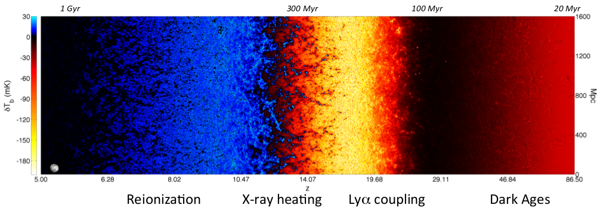

21 cm Cosmology

Background
Neutral hydrogen has a characteristic emission and absorption line at a rest wavelength of 21 cm (corresponding to a frequency of 1420 MHz), produced by the spin-flip transition of the electron in the hydrogen ground state. Because the universe was largely neutral for its first billion years, this line gives us a potential window into the cosmic dark ages and the Epoch of Reionization (EoR) — the period when the first stars and galaxies lit up and ionized the surrounding hydrogen.
One observable is the global 21 cm signal: the sky-averaged brightness temperature of the 21 cm emission or absorption measured as a function of frequency. Different frequencies correspond to different redshifts, so the global signal encodes the thermal and ionization history of the intergalactic medium (IGM) over cosmic time. The expected signal is faint (of order tens of millikelvin) and sits beneath a foreground emission that is $10^4$–$10^5$ times brighter, making it one of the most challenging measurements in observational cosmology.
The global 21 cm signal is exquisitely sensitive to anything that heats or cools the hydrogen gas relative to the CMB. If dark matter interacts with baryons — via, for example, a long-range Coulomb-like force — it can transfer energy to or from the baryons, leaving a distinctive imprint on the 21 cm signal. This makes the global signal a powerful probe of dark matter physics that is inaccessible to collider or direct detection experiments.
My Work
I worked on deriving constraints on Coulomb-like baryon–dark matter interactions using data from the SARAS 3 radio telescope, one of the most sensitive instruments targeting the global 21 cm signal. In Coulomb-like models, the interaction cross section scales as $\sigma \propto v^{-4}$, which means the coupling is strongest at the low velocities characteristic of the early universe. This cooling of the baryons would deepen the 21 cm absorption trough during Cosmic Dawn.
The analysis required modelling the 21 cm signal self-consistently: not just the direct cooling of the gas, but also the indirect effect that DM–baryon interactions have on structure formation. A stronger coupling suppresses the growth of small-scale halos, which delays the onset of star formation and hence the Ly$\alpha$, X-ray, and ionizing backgrounds that drive the 21 cm evolution. Ignoring this indirect effect leads to incorrectly optimistic constraints. We performed a joint Bayesian fit of a global 21 cm signal model and a flexible foreground model to the SARAS 3 antenna temperature spectrum, placing meaningful upper bounds on the strength of these interactions.